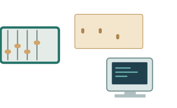
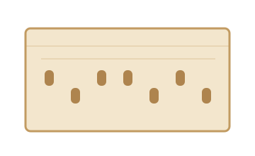
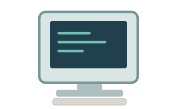

Мини-музей · три экспоната
Как менялись инструменты вычислений
От счётных инструментов до первых массовых персональных компьютеров. Выберите экспонат — откроется его отдельная страница.

Экспонаты коллекции

Счёты
Как считать числа с помощью косточек, перемещаемых по стержням.
Открыть страницу →
Перфокарты
Как отверстия в картоне использовались для кодирования информации.
Открыть страницу →
Персональные компьютеры
Когда вычисления стали доступнее одному человеку на рабочем месте.
Открыть страницу →Что важно заметить на лекции
Нажатие на ссылку открывает другой HTML-документ. Браузер читает его разметку и тот же общий файл styles.css. Для этого сайта не требуется ни Python, ни собственный JavaScript, ни база данных.